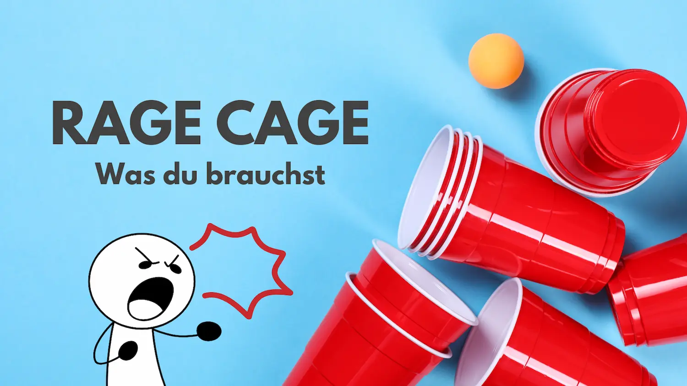

Du suchst nach einem Trinkspiel, das schnell, laut und einfach nur verrückt ist? Dann bist du beim Rage Cage genau richtig. Das Spiel bringt Chaos, Spaß und jede Menge Action auf jede Party. Kein Wunder, dass das Rage Cage Trinkspiel bei Studenten, in WGs und auf Festivals so beliebt ist.
Fragst du dich: Was ist Rage Cage eigentlich? Dann stell dir ein Trinkspiel vor, das Geschwindigkeit, Chaos und jede Menge Gelächter vereint. Manche nennen es auch „Stack Cup" oder „Boom Cup", aber am Ende läuft es immer auf dasselbe hinaus: viele Becher, ein paar Ping-Pong-Bälle und der Versuch, schneller zu treffen als dein Nebenmann.

Das Schöne am Rage Cage Trinkspiel: Du brauchst kein kompliziertes Equipment, sondern nur ein paar Basics, die fast jeder Studentenhaushalt oder jede WG schon im Schrank hat.
Das gehört auf jeden Fall dazu:
So entsteht ein Spielfeld, das auf den ersten Blick harmlos aussieht, aber im Laufe des Spiels schnell zur tobenden Party-Arena wird. Schon nach den ersten Würfen merkst du: Hier zählt nicht nur Geschick, sondern auch Reaktion, Schnelligkeit – und ein bisschen Glück.
Jetzt wird's wild – hier kommen die offiziellen Rage Cage Regeln, so wie sie wirklich gespielt werden. Schnell, laut, chaotisch – und einfach verdammt witzig.
Startaufstellung Zwei Spieler stehen sich gegenüber. Beide bekommen je einen Ping-Pong-Ball. Der Tisch ist voll mit gefüllten Bechern in der Mitte – einer davon ist der große „King's Cup".
„3, 2, 1 – Rage Cage!" Die beiden starten gleichzeitig. Erst wird ein Becher aus der Mitte gegriffen und geext. Danach versucht man, den Ball mit einem Aufsetzer (also einmal auf dem Tisch auftippen lassen) in den leeren Becher zu treffen.
Treffer? Nächster! Triffst du, gibst du Becher + Ball nach links weiter. Wirfst du beim allerersten Versuch direkt rein, darfst du ihn sogar an eine beliebige Person weitergeben – das bringt extra Tempo ins Spiel.
Becher-Showdown Kommt es dazu, dass zwei Becher direkt hintereinander unterwegs sind und der hintere trifft, muss er seinen Becher in den des Spielers vor ihm reinstellen. Das ist ein Rage-Moment – und sorgt für Chaos.
Gefangen? Trink! Wurdest du „eingeholt" (also hat der hinter dir getroffen, bevor du es geschafft hast), musst du einen neuen Becher aus der Mitte exen und ab sofort mit diesem weiterspielen. Der Ball bleibt bei dir, der Stapel geht an den linken Nachbarn.
Wichtig beim Nachbarn links Wenn du direkt links neben jemandem sitzt und triffst beim ersten Versuch: Du darfst den Becher nicht irgendwohin geben, sondern musst ihn in seinen Becher reinstellen. Trifft er zuerst, geht's für ihn normal weiter.
Zu wenige Mitspieler? Hier findest du die besten Trinkspiele zu zweit!
Klar: Bei Rage Cage geht's in erster Linie um Spaß. Aber wer nicht ständig den großen Becher trinken will, sollte ein paar Dinge beachten. Mit der richtigen Strategie kommst du weiter – und hast trotzdem jede Menge Gaudi dabei.
Wenn du den Ball gleich beim ersten Versuch triffst, darfst du den Becher an eine beliebige Person weitergeben. Und genau hier kommt deine Chance:
➡️ Gib ihn an jemanden, der gerade nicht aufpasst. Vielleicht quatscht der gerade oder lacht noch über den letzten Treffer – perfekte Zielscheibe. ➡️ Setz gezielt jemanden unter Druck. Zum Beispiel die Person, die du vorher eingeholt hast – Revanche! ➡️ Immer vor den anderen Spieler. Gib den Becher an die Person links des Spielers mit dem anderen Ball. So wird die Runde schnell und dieser Spieler muss schnell treffen. Alternativ ist auch der Spieler davor ein gutes Ziel, denn er hat die Möglichkeit den Spieler zu seiner Linken zum Trinken zu bringen.
Am Ende bleibt's dabei: Rage Cage ist laut, wild und witzig – aber wer clever spielt, trinkt weniger. Oder zumindest nicht den großen Becher ganz am Schluss. 😄
Lesetipp: Entdecke die besten Trinkspiele mit Karten.
Musik ist bei Rage Cage fast genauso wichtig wie die Becher und der Ball. Ohne den richtigen Sound wirkt das Spiel halb so wild – mit dem passenden Song dagegen wird's zur Eskalation pur.
Viele Gruppen spielen Rage Cage mit einem festen Song – ein einziges Lied, das die ganze Runde durchläuft. Dieses Lied läuft dann in Dauerschleife, bis der letzte Becher in der Mitte getrunken wurde. Das sorgt für ein ganz eigenes Partygefühl: Du hörst es, und alle wissen sofort – "Jetzt geht's los!"
Diese Songs sind inzwischen fast schon Klassiker fürs Spiel – entweder wegen ihres Tempos, ihres Beats oder weil sie einfach pure Eskalation auslösen:
Manche Gruppen nutzen aber auch bewusst langsamer startende Songs, die sich im Verlauf steigern – das passt gut zum Spannungsbogen beim Spiel. Beispiele:
Keine Lust der DJ zu sein? Hier ein paar Empfehlungen für Rage Cage Playlists:
Eins vorweg: Rage Cage ist schon ziemlich unterhaltsam, so wie es ist. Aber wenn ihr öfter spielt oder einfach mal was Neues ausprobieren wollt, gibt's jede Menge Möglichkeiten, das Spiel noch wilder, chaotischer oder einfach witziger zu gestalten.
Hier ein paar Ideen, mit denen du das Rage Cage Drinking Game auf ein neues Level hebst:
Einige Becher in der Mitte kannst du mit besonderen Drinks füllen:
Wer diesen Becher erwischt, muss durch. Das sorgt garantiert für Reaktionen – und für noch mehr Spannung, wenn's zum nächsten Becher geht.
Wem der Becher in den Becher gestellt wird (also wer „eingeholt" wird), der muss nicht nur trinken, sondern zusätzlich eine kleine Aufgabe erledigen. Zum Beispiel:
So kommt noch mehr Stimmung rein – und der Trash-Faktor steigt. Perfekt geeignet ist dazu natürlich Dare Pong. Einfach die Dares unter die Becher legen und genießen!
Kombiniere das Spiel mit einem Motto:
Das nimmt das Spiel nicht zu ernst – und sorgt für legendäre Fotos.
Ihr habt gutes Wetter? Hier findest du tolle Trinkspiele für Draußen!
Wenn ihr viele Leute seid: Spielt in Teams! Zwei Spieler teilen sich einen Ball und wechseln sich ab – das fördert Zusammenarbeit (oder Chaos). Auch gut: Ein Team ruft, das andere trinkt – wer lauter ist, gewinnt.
Bereite vorher kleine Karten vor, auf denen Sonderregeln stehen. Ziehen darf man z. B. wenn man zum dritten Mal in Folge eingeholt wird. Beispiele:
Das bringt neuen Schwung rein – besonders bei Gruppen, die das Spiel schon oft gespielt haben.
Schnappt euch eine Kamera oder macht Insta-Stories. Noch besser: Lasst einen Mitspieler das Spiel als „Sport-Kommentator" begleiten. Sätze wie „Oh, da zittert der Becher!", „Mutiger Wurf – und er geht rein!" machen das Ganze noch absurder – aber genau das ist der Spaß.